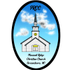
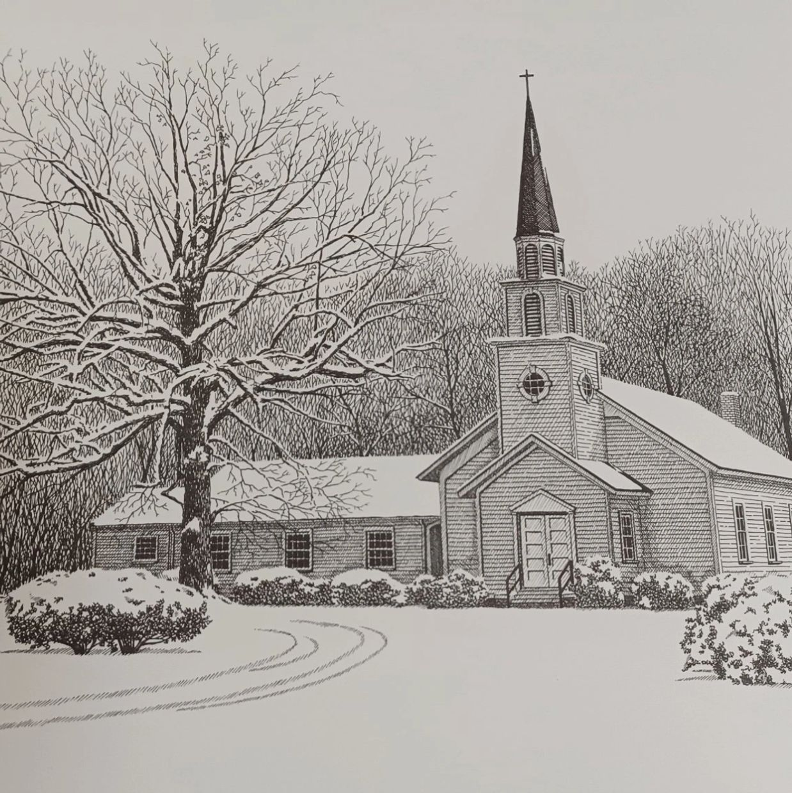

Church History | Pleasant Ridge Christian Church


On July 28, 1867, a small group of people met at Liberty School House, not far from the current church location, and organized a community church which was received into the North Carolina and Virginia Conference of Christian Churches later that year. They described themselves as, “members of the body of Christ having been regenerated and born again by exercising repentance toward God and faith in our Lord Jesus Christ being desirous of associated ourselves together as a church.” This short theological statement sums up the heart of the Christian message. Joe West – Former Pastor
“1867 was not a good year in North Carolina. The civil war had ended but the economy was in shambles. The south was an occupied territory. The established church denominations were fighting over minor differences. In 1793 the founders of the Christian ‘movement’, (never thought of themselves as a denomination), had as their goal to recover the essential pattern of the church of the New Testament. The idea found new life among people who were tired of the divisions the civil war had brought.” Joe West – Former Pastor
In august, 1881, the congregation met to discuss building a place of worship and selected a location near Ridgefield School on land given by David Huffines. On the fifth Sunday of June 1884 the completed building was dedicated and the church was officially named Pleasant Ridge Christian Church. In 1937, the church building was moved from the original location facing south to the present location facing east.
One of the church’s greatest challenges came on June 28, 1996 when the main building and fellowship hall burned to the ground. By God’s grace the Sunday school building, which was built in 1994, was spared and services were held there. With the help of the congregation, the community, individuals, churches and organizations from as far away as Iowa, the new church rose out of the ashes and was dedicated on March 29, 1998.
Copyright © 2026 Pleasant Ridge Christian Church - All Rights Reserved.
Powered by